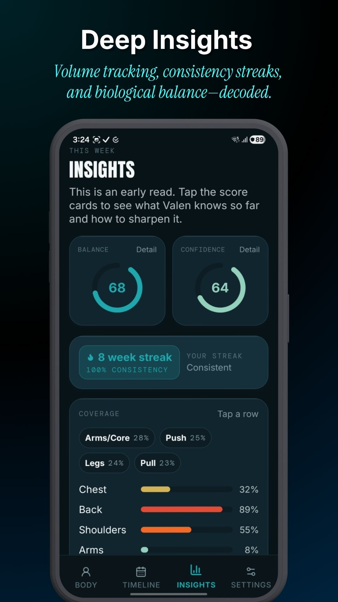
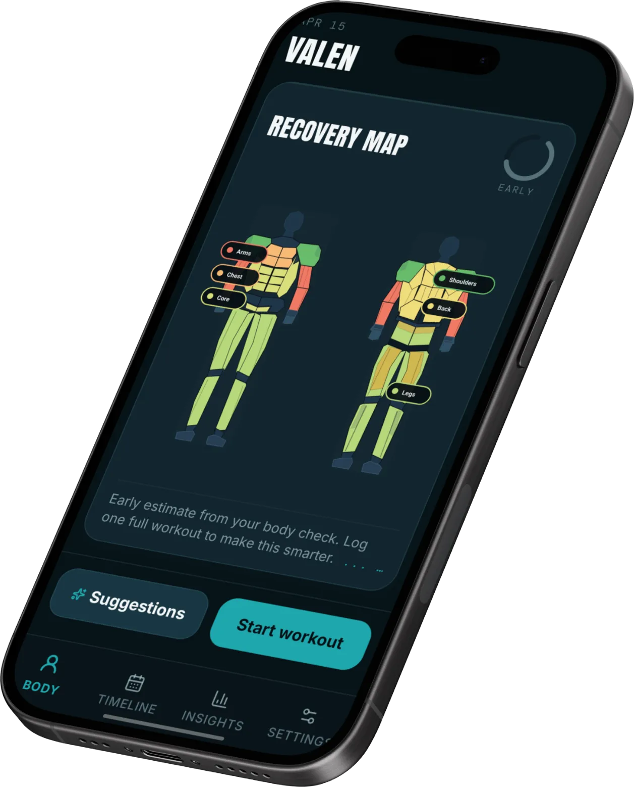
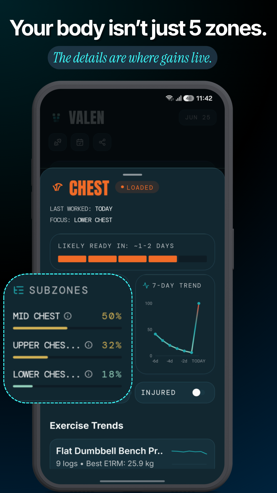
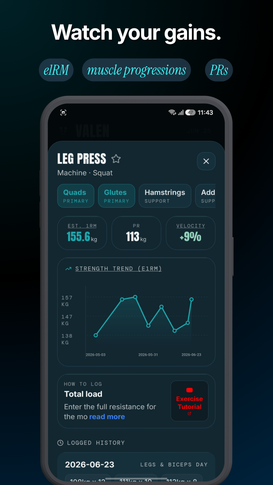
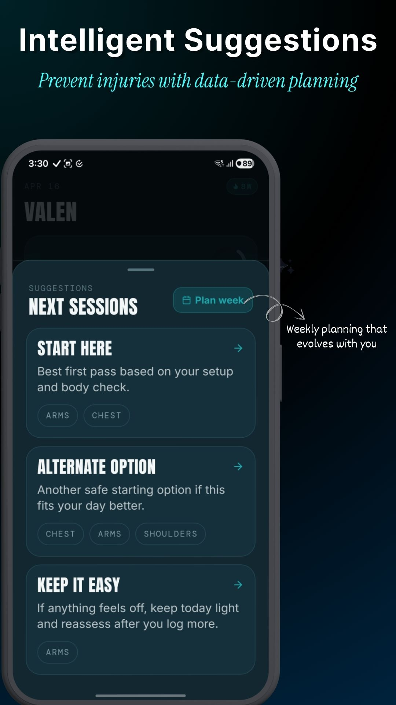
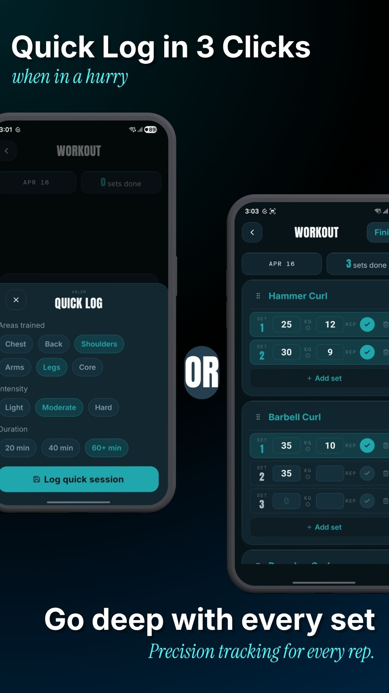

Read muscular recovery at a glance. Color-coded states show readiness with no wearables required.

TOO MANY MUSCLES TO TRACK. ONE APP THAT DOES — SERIOUSLY.
Valen maps your recovery across every muscle group, so you always know what to train, what to rest, and what's about to peak.

THE SCIENCE OF BETTER SESSIONS
Monday isn't chest day. Tuesday isn't legs. Your body doesn't care about your calendar. Valen tracks the Stimulus-Recovery-Adaptation cycle at the individual muscle level, so you train the right things at the right time.
Every set logs direct load to the muscles it actually hit, adjusted for reps, weight, and effort.
Recovery is continuous, not overnight. Your Core recovers differently than your Back. Valen models both.
When a muscle peaks above baseline readiness, Valen tells you. That's when you push.
TRAIN WITH REAL DATA
Front delt. Lateral delt. Rear delt. Three muscles. Three recovery timelines.
Generic apps lump them together and bench your whole shoulder for two days. Valen knows your lateral delt is fresh and your front delt needs one more day.
Train the right part. Leave the rest alone.

METRICS WITH CONTEXT
Not "did I add weight this session." Whether your strength is trending up, plateauing, or quietly going backwards over the last 90 days.
e1RM, velocity, and all-time PRs are tracked automatically across every lift you log. No spreadsheet required.

WHAT VALEN ACTUALLY DOES
Read muscular recovery at a glance. Color-coded states show readiness with no wearables required.

Get training suggestions based on what is actually recovered, not the day of the week.

Log detailed set-by-set entries or use 10-second quick logs to dynamically feed the recovery engine.

Track session-over-session progressive overload. Celebrate performance gains with automated streak counters.
Monitor central nervous system (CNS) fatigue. Get automated deload alerts before entering systemic overtraining.
Identify localized training plateaus and push/pull imbalances with dynamic exercise substitutions.
Push-Pull-Legs. Upper-Lower. Bro split. Whatever you're actually running.
Valen generates 21 sessions of synthetic history based on your frequency and profile.
Ready zones. Loaded zones. Fatigue scores. Day one looks like week four.
Private by default.
Encrypted & optional.
Actual daily read.
Valen is free to download and use. Unlock Pro (full history, weekly planning, and advanced insights) with a simple yearly subscription or a single lifetime purchase. You own it on your terms.
ANSWERS TO RAW QUESTIONS
Most workout apps stop at logging sets. Valen tracks muscular recovery dynamically, helping you understand what’s actually ready to perform, recover, or be pushed harder. Instead of guessing fatigue, you train with recovery awareness built in.
Yes. Everything runs on what you log. No heart rate monitor, no sleep tracker, no extra hardware needed.
Yes. Valen continuously evaluates muscular readiness and fatigue accumulation to help guide smarter training decisions over time.
Absolutely. Valen adapts recommendations based on your experience level, training frequency, and goals, whether you’re just starting or training seriously for years.
Yes. Different muscle groups recover at different rates. Valen models localized recovery dynamically rather than treating the body as one global fatigue score.
No. Valen is designed to stay fast during workouts with streamlined logging and automated recovery calculations running in the background.
Everything lives on your device. Cloud backup is available for Pro users who want it, but it's optional, encrypted, and you can delete it anytime.
Yes. Core logging and recovery systems continue functioning even without an internet connection.
That’s one of the goals. Valen helps identify when additional training volume may become less productive due to accumulated fatigue and recovery imbalance.
Valen handles it. Recovery decay runs continuously; missed days mean your muscles recovered, and your map updates accordingly. The app doesn't get confused when real life happens.
ADAPTIVE WEEKLY PLANNING
Your body isn't a spreadsheet. If you're carrying extreme fatigue, Valen automatically reschedules your high-intensity sessions and swaps in active recovery or rest. It’s dynamic periodization, entirely on autopilot.
SMART SUGGESTIONS
Every time you open the app, Valen scans your localized fatigue across all 15 sub-zones. It instantly calculates what is fully recovered, avoids what is fatigued or injured, and serves up the perfect optimal training session.
HOME SCREEN WIDGETS
Keep your readiness front and center without even opening the app. Our beautifully crafted native Android widgets give you real-time recovery rings and status updates right alongside your other apps.
DEEP INSIGHTS
Training chest 4x a week while neglecting your back? Valen's engine analyzes your long-term volume distribution to warn you about severe anterior vs. posterior imbalances, specialization penalties, and chronic overtraining vectors.
Your push volume exceeds your pull volume by 320%. Consider adding Rhomboid and Lat work to prevent shoulder impingement.
ENCRYPTED CLOUD SYNC
Valen runs 100% offline for zero latency in the gym. But when you hit WiFi, it silently securely backs up your entire encrypted training history to the cloud. Lose your phone? You won't lose a single set.